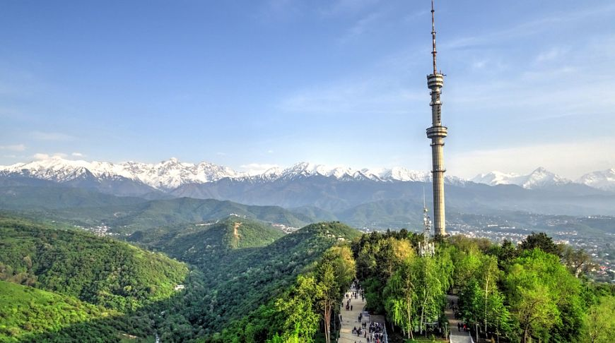
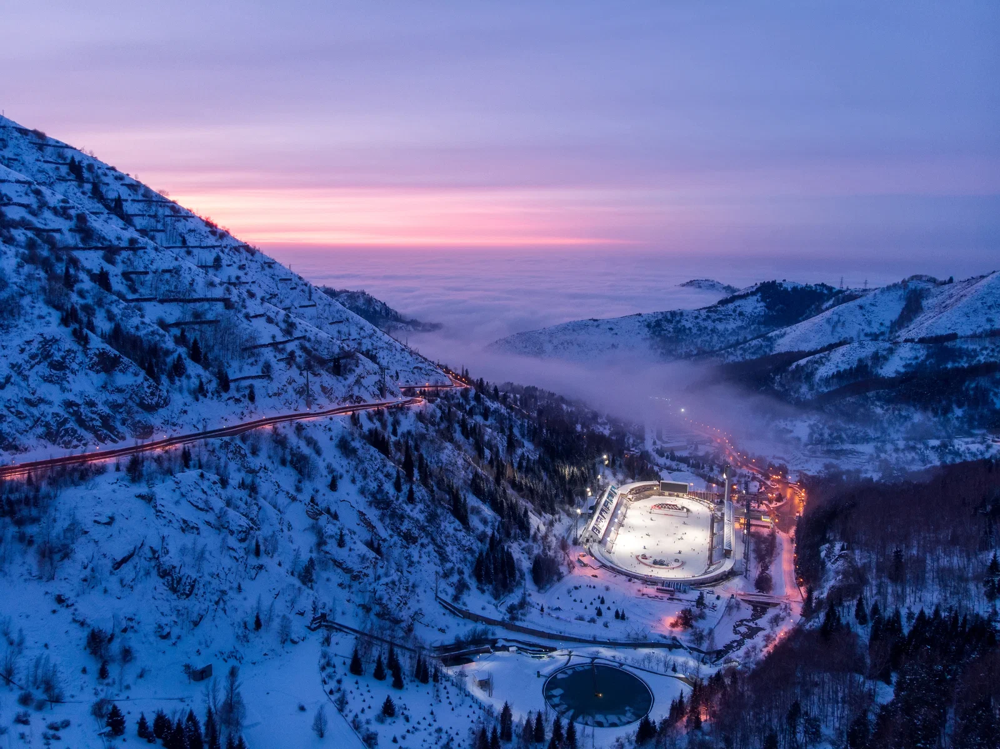

Көктөбе
Қала үстіндегі төбе мен 372 метрлік телемұнара. Кәдімгі канат жолымен көтеріліп, бүкіл Алматыны алақанға салғандай көруге болады.
Көрікті жерлер
Алматыда таулар, мұз айдыны, телемұнара мен жасыл бульварлар бір-бірімен астасады. Төменде қаланың ең танымал орындары.

Қала үстіндегі төбе мен 372 метрлік телемұнара. Кәдімгі канат жолымен көтеріліп, бүкіл Алматыны алақанға салғандай көруге болады.

Әлемдегі ең биік таулы мұз айдыны (1691 м). Мұнда конькимен сырғанап, таза тау ауасымен тыныстауға болады.

Медеудің жоғарысындағы тау шаңғысы курорты. Қыста шаңғышылар, жазда серуендеушілер келетін аймақ.
Атмосфера
Серуендеу кезінде осы домбыра сазын қосып қойыңыз — ол қаланың баяу, жайлы ырғағын жеткізеді.
әуен.